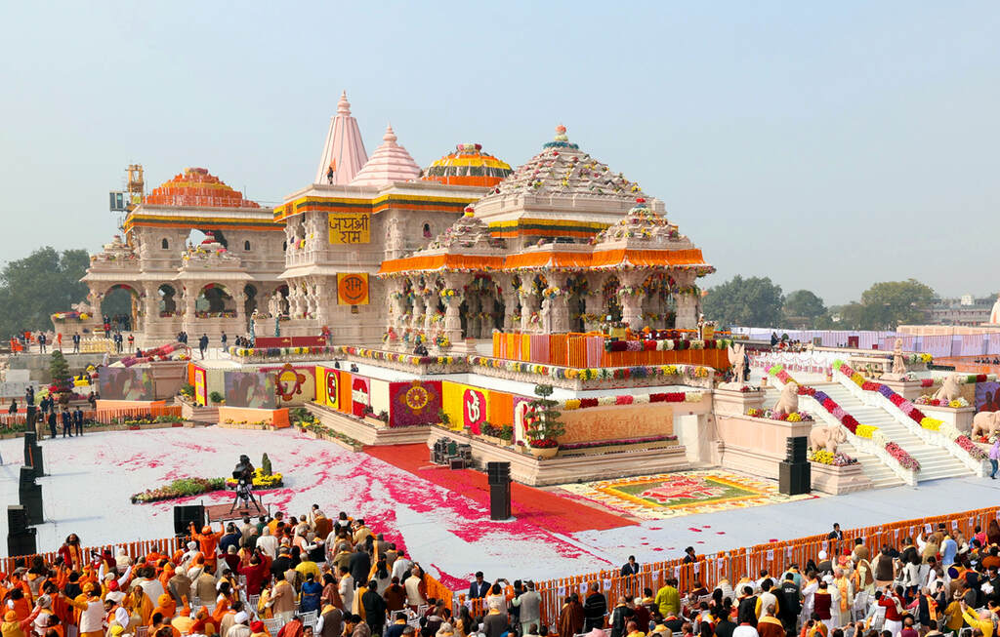
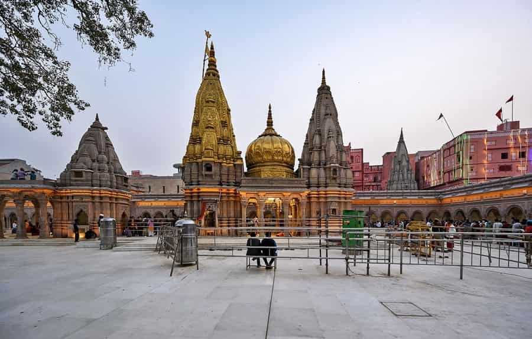
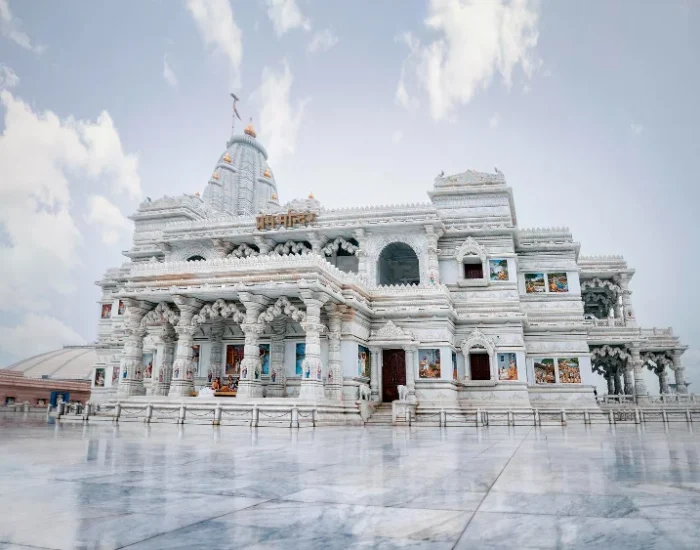

Temples and piligrimages in Uttar Pradesh
Ram Mandir Ayodhya

The Ram Mandir in Ayodhya, inaugurated on January 22, 2024, by PM Narendra Modi, is a magnificent three-story Hindu temple built in the traditional Nagara style using pink sandstone. Dedicated to Lord Ram as his birthplace, the temple spans 2.7 acres within a 71-acre complex, featuring 392 pillars, 44 doors, and no iron, designed to last 1000 years.
- Key Details about the Ram Mandir:
- Architecture & Design: Constructed in the Nagara style, the temple features 5 mandaps (halls) and intricate carvings on Bansi-Paharpur pink sandstone.
- Dimensions: The main structure stands 161 feet tall, 360 feet long, and 235 feet wide.
- The Idol (Ram Lalla): The 51-inch idol of a five-year-old Lord Ram was crafted by sculptor Arun Yogiraj and consecrated during the 'Pran Pratishtha' ceremony.
- Official Ayodhya District Website
Varanasi or Kashi or Benaras

Varanasi, also known as Kashi or Banaras, is one of the world's oldest continuously inhabited cities, situated on the Ganges River in Uttar Pradesh. Known as the "City of Light," it is India's spiritual capital, famous for its sacred ghats, Kashi Vishwanath temple, evening Ganga Aarti, and role as a center for Hindu pilgrimage, learning, and culture.
Mathura and Vrindavan

Prem Mandir UP is a Hindu temple in Vrindavan, Mathura district, Western Uttar Pradesh, India. The temple was established by Jagadguru Shri Kripalu Ji Maharaj. It is maintained by Jagadguru Kripalu Parishat, an international non-profit, educational, spiritual, charitable trust.
- Key details about Prem Mandir:
- Location: Vrindavan, Mathura district, Uttar Pradesh.
- Founder: Established by the fifth Jagadguru, Shri Kripalu Ji Maharaj, in 2001 (inaugurated 2012).
- Architecture: Built with Italian marble by over 1,000 artists, featuring intricate carvings that depict the life of Lord Krishna (e.g., Govardhan Leela, Raas Leela).
- Highlights: The temple changes colors at night due to lighting, and its musical fountain show is a major attraction.
- Purpose: To enhance the spiritual environment of Vrindavan and emphasize the philosophy of divine love.
- Visitor Info: Free entry. It features beautiful gardens, life-sized displays of Krishna's pastimes, and is fully accessible.
- Official Mathura District Website
- Uttar Pradesh Tourism
Bake Bihari Temple

The Banke Bihari Temple in Vrindavan, built in 1862, is one of India's most revered shrines dedicated to Lord Krishna. Located in Raman Reti, it is famous for its unique "curtain tradition" (darshan is interrupted by curtains) and the absence of morning bells, as Krishna is worshipped as a child. The deity, in Tribhanga (three-bent) posture, is worshipped with intense love.
- Key Aspects of the Banke Bihari Temple:
- The Deity: The idol is believed to have appeared in Nidhivan when saint Swami Haridas sang, and represents Radha and Krishna as one form.
- Unique Traditions:
- Curtain System: The curtains are drawn every few minutes to prevent devotees from looking at the deity for too long, as it is believed that his eyes can hold the devotee in a trance.
- No Bells: There are no bells or conch shells used in the temple, as it is believed Bankey Bihari does not like the sound.
- "Phool Bangla" Seva: The temple is famously decorated with, and the deity is surrounded by, elaborate flower arrangements.
- Worship & Timing: The seva (service) is divided into three parts: Shringar, Rajbhog, and Shayan Seva. The temple is crowded year-round, especially during the festivals of Janmashtami and Holi.
- Location & Structure: The temple is situated in the holy city of Vrindavan, Mathura district, Uttar Pradesh. The building itself features detailed arches and pillars reflecting classic Rajasthani architecture.
- Best Time to Visit: October to March is the best time for a visit, with daily worship occurring throughout the day, closing during the resting hours, roughly from 8:30 PM to 9:30 PM.
- Uttar Pradesh Tourism